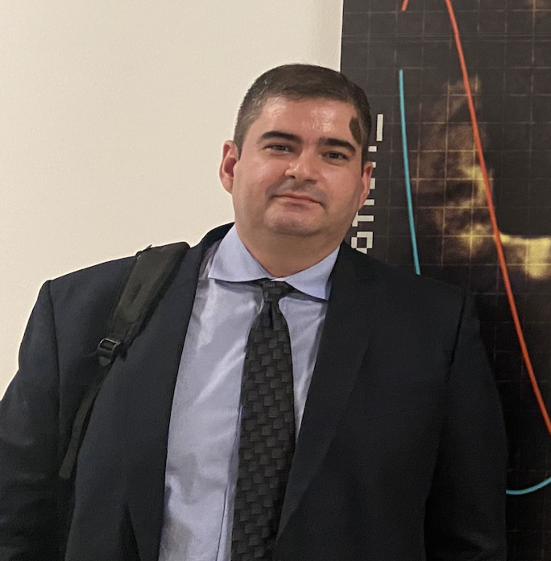

I am an Associate Professor at IMECC/Unicamp, the Institute of Mathematics, Statistics and Scientific Computing at the University of Campinas.
My research area is the qualitative theory of dynamical systems: Filippov systems, structural stability, systems with symmetries (Hamiltonian and/or reversible-equivariant), existence and stability of limit cycles, Ricci flow on homogeneous manifolds, etc.
I am currently the Director of the Institute of Mathematics, Statistics, and Scientific Computing at Unicamp (2022–2026), a columnist for the Noticiário da Sociedade Brasileira de Matemática, and Coordinator of the Undergraduate Teaching Committee of the Brazilian Mathematical Society.
My e-mail is: RMiranda [at] unicamp [dot] br
I share Federico Ardila’s axioms, in particular the Axiom 4: “Every student deserves to be treated with dignity and respect”. See more details here.
Alternate urls for this website: - https://www.ime.unicamp.br/~rmiranda/ (main) - https://rmiranda99.github.io/ (not to updated)
Contact address:
IMECC/Unicamp – main building (office #335)
R. Sérgio Buarque de Holanda, 651
Cidade Universitária
Campinas/SP
Brazil
13083-859
[agenda]